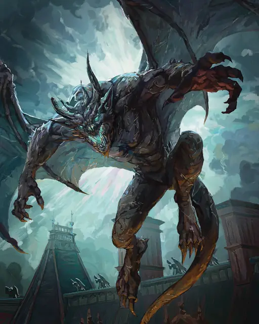

Гаргулья
Gargoyle
Средний Элементаль, Хаотичный Злой

Класс Защиты 15 Инициатива +2 (12)
Хиты 67 (9к8 + 27)
Скорость 30 футов, Полёта 60 футов
| мод | спас | ||
|---|---|---|---|
| СИЛ | 15 | +2 | +2 |
| ЛОВ | 11 | +0 | +0 |
| ТЕЛ | 16 | +3 | +3 |
| мод | спас | ||
|---|---|---|---|
| ИНТ | 6 | −2 | −2 |
| МДР | 11 | +0 | +0 |
| ХАР | 7 | −2 | −2 |
Иммунитеты Яд; Истощение, Окаменевший, Отравленный
Чувства Тёмное зрение 60 футов, пассивное Восприятие 10
Языки Первичный (Терран)
Опасность 2 (450 опыта; БВ +2)
Особенности
Облёт. Гаргулья не вызывает Провоцированных атак, когда вылетает из вражеской досягаемости.
Действия
Мультиатака. Гаргулья совершает две атаки Когтями.
Когти. Бросок рукопашной атаки: +4, досягаемость 5 фт. Попадание: 7 (2к4 + 2) Рубящего урона.
Бонус мастерства +2
Среда обитания Город, Подземье
Сокровища Любые
Гаргулья
Скрывающийся на виду каменный страж
Гаргульи — это скульптуры, в которых поселились стихийные духи. Крылья и магия позволяют их тяжёлым каменным телам летать. Они часто сидят на высоких объектах, на которых можно затеряться среди вычурных элементов архитектуры, скальных образований или обычных статуй.
Обычно гаргульи служат магам, призвавшим их в подготовленные тела. Но, предоставленные сами себе, они могут совершать жестокие выходки и красть сокровища, а потом прятать их в своих высотных логовах.
Внешне гаргульи могут сильно отличаться друг от друга. Совершите бросок по таблице «Статуя гаргульи» для вдохновения или выберите сами внешность гаргульи.
Статуя гаргульи
| 1к6 | Гаргулья выглядит как... |
| 1 | Вечно улыбающийся херувим. |
| 2 | Грубо обработанный или природный камень. |
| 3 | Повреждённая или изуродованная статуя с недостающими фрагментами. |
| 4 | Дракон с отполированными каменными чешуйками. |
| 5 | Готический демон с рогами и хвостом. |
| 6 | Функциональный элемент окружения, такой как необычный подиум или колонна. |
Засады гаргулий
Гаргульи стремятся нападать из засады на врагов или существ, вторгшихся на их территорию. Лишённые естественных потребностей и наделённые сверхъестественным терпением, эти чудовища способны месяцами выжидать совершенно неподвижно, раскрывая себя лишь в самых подходящих для атаки условиях. Обычно они прячутся там, где статуи — это привычная часть обстановки; или где рельеф скрадывает очертания и цвет их тел.
Совершите бросок по таблице «Маскировка гаргульи» для вдохновения или определите сами место её засады.
Маскировка гаргульи
| 1к8 | Гаргулья скрывается среди… |
| 1 | Наростов и коры гигантского дерева. |
| 2 | Надгробий на кладбище или у мемориала. |
| 3 | Выступов на скале или каменистой гряде. |
| 4 | Окаменевших жертв василиска или медузы. |
| 5 | Барельефов на резных воротах или стене. |
| 6 | Обломков в руинах или на свалке. |
| 7 | Сталактитов или сосулек на своде пещеры. |
| 8 | Статуй на фасаде замка, особняка или храма. |